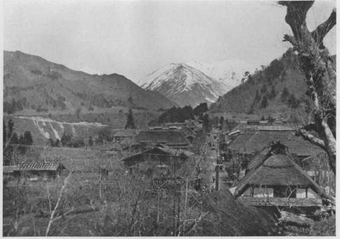
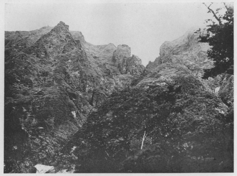
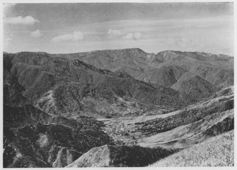

| 三国山と苗場山 | |
| 木暮 理太郎 | |
| (2015) | |
三国山と苗場山
木暮理太郎
大正二、三年の頃、東京から見える山のスケッチを作る為に、強い北西の風が吹く晴れた冬の日には、よく愛宕山の塔や浅草の凌雲閣に上って、遠い雪の山の姿に見入りながら、新しい印象や古い記憶を辿って、山の持つ個性から其
何山であるかを探し出すのが楽しみであった。大井川奥の聖
岳などは愛宕の塔から眺めると、三峠
山と朝日山とが石老山の上で裾を交えている其たるみの間に置かれた一握の雪かと見まがうものであったが、鋭い金字形の左は急に、右は稍
緩く、しかもガックリと落ち込む力強い線のうねりに、此
山の隠し難い特徴が現れていた。それで聖岳と判ったのである。丁度同じ頃に凌雲閣に上って展望した時、伊香保の北に在る小野子山の上に、大きな裸虫が横たわっているとでも形容す可
き真白な雪の山を見出して、其形が曾て赤城の黒檜
山の頂上から眺めた越後の苗場山にそっくり似ているのに驚いた。東京から苗場山が見える！ これが聖岳のように三千米以上の高峰ででもあれば兎
に角
、僅
に二千百米を少し超えた程度で、果して東京から見えるかは頗る疑わしいので、之
を確めたいと思って、山岳展望に最も邪魔である煤煙が比較的少ない赤羽台まで幾度か出懸けて行き、八倍の双眼鏡で仔細に調べて、終
に苗場山に相違ないことが判明した。東京との距離は直径にして百六十粁
、即ち約四十里である。聖岳はこれより三里程近い。
然
し赤羽台へ行きさえすれば、いつでも此山が見られるものと早合点されては困る。展望の季節は十二月から四月、稀に五月上旬迄であるが、此山の見える日は其間に二日か三日あるに過ぎぬ。多くとも五日を超えることは無いのである。
苗場山を始めて世に紹介したのは、恐らく『北越雪譜』の著者といわれている鈴木牧之
であろう。文化八年に苗場山に登って「苗場山に遊ぶの記」という文を書いた。漢文ばやりの当時に、これは珍しくも仮名交り文で、支那流に誇張などせず、平易に率直に書いてある。殊に「爰に眼を拭ひて扶桑第一の富士を視出せり、其様雪の一握を置くが如し、人々手を拍ち奇なりと呼び妙なりと称讃す」というあたりは其時の喜びの有様が目前に浮んで来る。が、しかしこれは牧之の糠
喜びで、苗場山から富士の見えないことは武田君が実証されたし、又
八月に富士山が真白な筈もないから、雪の一握は多分雲を見誤ったものであろうと、これも武田君の話である。ともあれ私は此文を読んで以来、復
た苗場山に強い執着を感じて、再遊の念禁じ難きものがあったにも拘
らず、其後其山の麓近くを通ることはあっても、登山を果す機会が得られずに幾年かが空しく過ぎてしまった。
然
るに待てば海路の日和とやら、上越南線が沼田まで開通したことは、三国峠方面へ行く人に取っても、どれ丈
便利になったことであろう。上野駅を一番列車で出発すれば、沼田から途中の湯宿
まで自動車、それからは歩いても其日の中
に三国峠下の法師温泉まで辿り着ける。尤も今では鉄路も水上駅まで延び、清水峠のトンネルも九月から開通することであるし、其上法師温泉迄も自動車が通うようになったということであるから、全く空恐ろしい迄に便利になった。私は幾度この法師温泉に来たことであろう。其頃は五月にならぬと自動車が出ないので、沼田から歩いて湯宿で一泊し、其翌日法師へ着くようにしたこともあった。未だ汽車の通じない頃は、沼田まで高崎から軽便電車に乗ったものであるが、途中よく脱線して其度毎
にお客は車から下りて復旧の手伝いをしたりなどした。途中はさして面白いとはいえないが、いつも春か秋の旅であったから、慣れた道でも飽きるという程のこともなかった。
沼田から一里、月夜野橋を渡ると真白に雪を戴いた清水山塊の群峰が利根川の上流に現れて、すっきりした耳二ツの姿が目を喜ばせる。家並の中央を小川が流れて、山間の古駅路の面影を残している月夜野の宿では、五月の五日前後であると節句を祝う古風な幟が七、八十本、其小川の両側に立てられ、手桶やバケツなどに藤の花か躑躅
を生けたものが戸毎の軒下に置いてあるのを見た。磔茂左衛門の墓からは香烟が渦を巻いて昇っていた。道はすぐ赤谷
川の左岸に出る。四、五町の間両岸とも高さ二、三丈ある岩の竪壁で、対岸の岩の上には大きな赤松が程よく生え、一寸
見られる景色であったが、其後松は伐られて台なしになってしまった。いつかここで馬車が墜落して、乗客が残らず惨死した話を聞かされて以来、馬車も自動車も此処
を通る時は余り乗り心地よくはなかった。湯宿の金田屋へ泊った折は、部屋の四方の襖に詩とも歌ともつかぬ格言めいた奇抜な文句が書いてあるので、同行の友人と腹を抱えて笑ったりした。大島橋の上から遠く望む仙倉山と恵比須大黒ノ頭とは、北アルプスの劒岳立山にも劣らぬ眺めである。
相俣
の人家を出離れると正面に小出俣
岳と恵比須大黒ノ頭とが、松本平から北アルプスでも眺めるように目の前に立ちはだかる。赤谷川に架けられた生井の相生橋は、水面から二十丈とかいう高さで、甲州の猿橋などより遥
に高く、峡谷も短い間ではあるが実に立派なものだ。この景勝の地を占めている笹ノ湯の建物が橋の上から瞰
まれる。猿ヶ京からだらだらと下って急に吹路へ上る坂にはいつもうんざりするのであるが、右の山側へ作られた林道も楽な代りに余り遠いので、これもうんざりしてしまう。四月上旬には此処から残雪があって、法師の手前のムタコ沢の落合まで断続していた。其頃は新緑も未だ萌えず、路傍の蕗
の薹
だけが雪解の跡の赤土から淡緑の頭を擡
げていた。落合から温泉までは三尺以上の雪が固く凍っているので其上は歩きよかった。家の前には屋根から下ろした雪が七尺も積っていた。いつも花の盛りである裏庭の桜は蕾がまだ固かった。

●相俣宿と小出俣岳
温泉宿は今の湯元の長寿館のみである。建物は幾棟にも分れて可
なり広い。浴室は男女の二室に分れ、屋根が高く中はゆったりしている。大きな浴槽が二つあって、底は孰
れも天然の小石である。湯の湧き出している河原を囲って浴槽にしたのであるという。湯は適温よりも少しぬるい方である。無色透明であるが少し青味を帯びているせいか、其中に浸ると体が透
き徹
る程白く見える。温泉好きの私は時を選ばず一昼夜に五、六回も入る。夜半に起きて湯気の中に霞む薄暗いランプの光に照され乍
ら、長々と手足を伸していつ迄も独りで湯に浸っている心持は何ともいえない。しかし自動車が通ずるようになっては、この素朴もいつか失われるであろう。惜しいことである。
温泉から三国峠へは二時間で楽に登れる。五月でも三国権現のお宮の前には五、六尺の残雪を見るのが普通であった。ここまで来たならば次手
に右手の草原を辿って三国山の頂上まで登るがよい、唯一時間の辛抱であるから。この高さでこの位の雄大な眺望はそうざらにあるとはいえないと思う。
頂上は平で東西に長い。五月には未だ北裏に可なりの残雪があるので、石楠
は葉を縮めて寒そうである。大蝦蟇が住んでいるので雨乞いすると屹度
降るといわれている池なども笹と共に雪に埋もれている。北はすぐ前に渋沢山が大きく聳え、其後に平標
山、仙倉山、恵比須大黒ノ頭、サゴーノ峰から小出俣岳に続く尾根が赤谷川の源流をぐるりと取り巻いて、崚嶒の大屛風を立て廻している。銀泥の雪と潑墨
の岩とが自然に成った絵である。東には遠く利根川水源地の山々が膚は靄
と溶け合って、雪だけが白くぼかし残されている、割合に近い武尊
山は、砕けた波頭を全身に浴びた巨鯨に似ているともいえよう。

●エビス大黒ノ頭のキレット
西は浅貝の窪地を隔てて雪を帯びた筍山が鼻のつかえる程に近くて高い。其上に苗場山の長い頂上がふくらみを持ったたるみのない線を右上りに一文字に曳いている、ゴーンと撞き出された巨鐘の音波にもたとう可
き其線の美しさは形容の言葉を知らない。真白な山体に黒く印された十数条の嶄岩
の列は、東の絶壁が容易に近付き難きことを示している。苗場山の右には神楽ヶ峰、桐ノ塔、雁ヶ峰、高石山など右手に長い裾を曳いて重なり合い、左にはナラズ山が筍山の連脈の上に鈍い笠状の頭を擡げ、次
で一段高く大黒山は恐ろしいまでに黒木が茂っている。東沢ノ頭から上信越三国の境にある白砂山までは、流石
に高山相を呈して輪廓が荒く鋭い。白根山、浅間山さては秩父の奥山なども、よく晴れた日には望まれる。雪の中から黒い頭をぽつんと市女笠
のように抜き出している稲包山から、尾根は脚の下の三国峠に連なっている。十月下旬ここから眺めた紅葉の大観は、また素晴らしいものであった。
四月上旬には温泉から峠まで三尺乃至
六尺の雪であった。峠の東側は五尺余りの雪庇が発達し、それを打砕いて峠の上に立った。権現様のお宮も鳥居もまだ雪に埋もれて、上の方が少し露われているに過ぎない。三国山の南側の草原だけは地肌が出て居たけれども、頂上は一面の雪で何処でも自由に歩けた。浅貝の谷間でさえも土の見えている所はない。漸く見慣れた杉森を探し出して双眼鏡で附近を物色すると、まだ屋根が半ば雪の上に出ているだけなので、少なからず驚かされたのであった。
愈々
苗場登山の目的で友人の松本君と法師温泉に着いたのは六月の初めであった。雪は最早
消えて新緑の世界となっていた。裏庭の桜も散ってしまって、庭前の樅
の木で囀るミソサザイの鳴声も聞かれなかった。翌日は雨の中を三国峠に登ったので、何の眺望も得られない。昔は六十六戸もあったという浅貝の宿も、今は十五、六戸に減じている。一月遅れの節句だというので、とある家で昼飯の代りに粽
を食べた。実にうまい。水に浸して置けば幾日も饐
えないという。之は一握りの餅米を三角形に笹の葉で幾重にも包んで、その儘
それを蒸すのであるが、米を包むのがなれぬとむずかしいものだそうである。
元橋という所で三国街道を離れ、浅貝川を徒渉
し、それから清津川に沿うて西に入ること四時間許
りで、赤湯山の西北に在る赤湯温泉に達する。途中蕨
と独活
と筍（根曲り竹）の多いのには一驚した。独活などは全く林をなしている。この次は是非五月中旬に来て、思うさまあの豊脆な味を賞美したいものだと松本君と申し合せた。
赤湯は赤湯山の西北で清津川が直角に曲っているその角の所の右岸の河原に湧き出している、何でも其辺を掘りさえすれば湯は出るらしい。六、七箇所あって孰
れもぬるいが一個所熱いのがある。元より河原を掘って湯を湛え、それに浴するのであるから浴槽などはなく、又同じ自然の儘でも鐘釣
や花敷ほど感じはよくない。沙
が赤錆びているので手拭などすぐ渋紙色に染る。それで赤湯の名があるらしい。宿は一軒で二棟ある。四、五十人は泊れるであろう。不潔は免れないが、二階にいて便所の臭気が座敷まで襲来するのには最も閉口した。
苗場登山の希望を話して相談すると、二、三年前に林道が造られたので、湯治に来た女衆でも下駄履きで蝙蝠傘をさして、此処から日帰りに参詣して来ると聞いて、少し張合いも抜けたが安心もした。ここでもお節句の粽が膳に上る。他の御馳走は辞退し、粽と蕨ですっかり満足した。
翌日は余り好もしい天候ではなかったが出発ときめる。また朝食代りに粽をたべ、山の上まで荷を持って貰う為に下男を借りることにした。道は対岸の赤倉山の尾根に通じているのであるが、橋はなし雪代水で徒渉は不可能である。止むなく温泉へ来る時に渡った一本橋を渡り返し、左岸の崖をへつり、股までつかって一個所岩の途切れを徒渉すると林道の登り口に出る。水の少ない時節ならば難なく橋も架けられるし徒渉も容易であるという。急な登りが二百米も続くと稍平な尾根の上に出た、成程いい道である。登るに従って闊葉樹林はいつしか針葉樹林となり、終
に根曲り竹の藪となったが、道は何処までも通じている。赤倉山の三角点に着いたのは十一時少し前であったから、上りに二時間半を費したことになる。今日は雲低く霧が深いので、視界は極めて狭い。
赤倉山から初
は稍急に、黒木の間を二十五分も下ったろう、残雪が次第に多くなり、最低の鞍部に着くと緩い上りが始まる。それが少し急になったと思う間もなく大残雪を踏んで右に上って行く。雪の尽きた所は広い頂上の東南の縁であるらしい。信越の国境を道が通じているように思った。右は急斜面の笹原で、展望さこそと想われるが、この霧では諦めるより外に仕方がない。左は丈の低い黒木の密林である。暫くして右側に栂
の古木が一本立っている所から路は左斜に密林の中に入る。察するにこの栂は目標として保存されているものであろう。切明けの幅は一間もあり、両側に轍
の跡のような溝が掘ってあるから、少しも紛れる心配はない。木は皆矮小で、風雨氷雪という自然の庭師の手になったものとはいえ、如何にも面白く風情ある姿をしているので、配置の整っている所では庭園でも歩いているような気がした。二千三十六米の三角点に着いたのは午後十二時十五分。ここから再び東北を指して国境の切り開けと合する。もう其辺は広漠たる一面の大雪田で、ほんの爪先上りに北の方へ高くなっている。雪解の跡と見たのは幾つかの沼で、沼と沼との間には或は右から或は左から、黒木立が墨絵のようにぽうとにじみ出している。何という広い頂上であろう、北アルプスの五色ヶ原でも之には及ばない。絶頂と思われる方を眺めても、真白な大きな櫛形の線がかすかに霧の中に浮んでいるだけで、行けども行けどもはてしがない。
どこかで日のさす気配がして、霧が薄れて来た。忽ち眼界が開けて間近く亜鉛葺の小屋が見えた。一間四方位のお籠り小屋である。其処に荷物を置いて、雪田と木立の境に沿い、絶頂の巨岩の下に達したのは午後一時である。岩の上には小さな銅像仏が安置され、賽銭があげてあった。連れて行った人夫は携帯のお神酒とお供
とを神前に捧げて礼拝した後、賽銭は下げて懐に入れてしまった。

●三国山より見たる苗場山
多年の希望を満たした折角
の登山も、霧の為に眺望はさて措き、附近の撮影すらも覚束ない有様であった。私達はこれから小赤沢へ下る目的なので、小屋に戻って昼食を済し、人夫と別れて一時十五分、教えられた道だというのを、地図と違っているので怪しみながらも深く気にとめもせず、下り始める。一町ばかりで道跡らしいものは消え失せ、可なり綿密に附近を探しても続きが判明せぬ。然し雪は六尺から一丈二、三尺も積っている。邪魔な笹や灌木は其下に押し竦
められているから何処でも自由に通れる。尾根から沢へ沢から尾根へと一時間以上も下って見たが、何処にも道らしいものはなく、遂に濛々
たる霧で深さの測り知れない崖の上に出てしまった。耳を澄すと遥か下の方で水音はしているものの何の用意もしていない私達にこの急崖は下れる筈がない。時は三時を過ぎて雨さえ強く降り出した。もとの赤湯へ帰るのが最も安全な策である。そこで下った時の足跡をたよりに頂上へ引返し、飛ぶように駆け下りたので、未だ暗くならない中
に河岸へ下りて、大声で人夫を呼び、迎えに来て貰って崖へつりを終えた。徒渉の箇所は午後の増水で胸近くまで浸った。全く暗くなればこの徒渉と崖へつりは不可能であるから、あの広い頂上で霧に捲かれながら帰り路に迷わなかったことがよかったのである。つまり足跡のお蔭で、それも雪のあった為に外ならない。
清津川上流の地域は、紅葉の美を以 て天下に鳴っている。それを眺めがてら翌年の秋に再び苗場登山を試みたが、此時も天候不良であった為に、茸汁と鹿の肉を満喫したのみで、紅葉と眺望と二つながら充分に味うことを得なかった。
（昭和六、八『婦人の友』）
底本：「山の憶い出 上」平凡社ライブラリー、平凡社
１９９９（平成11
）年6
月15
日初版第1
刷
底本の親本：「山の憶ひ出 上巻」龍星閣
１９４１（昭和16
）年再刷
初出：「婦人の友」
１９３１（昭和6
）年8
月
※底本は、物を数える際や地名などに用いる「ヶ」（区点番号5-86）を、大振りにつくっています。
※写真は、底本の親本からとりました。
入力：栗原晶子
校正：雪森
２０１４年5
月25
日作成
青空文庫作成ファイル：
このファイルは、インターネットの図書館、青空文庫（http://www.aozora.gr.jp/）で作られました。入力、校正、制作にあたったのは、ボランティアの皆さんです。